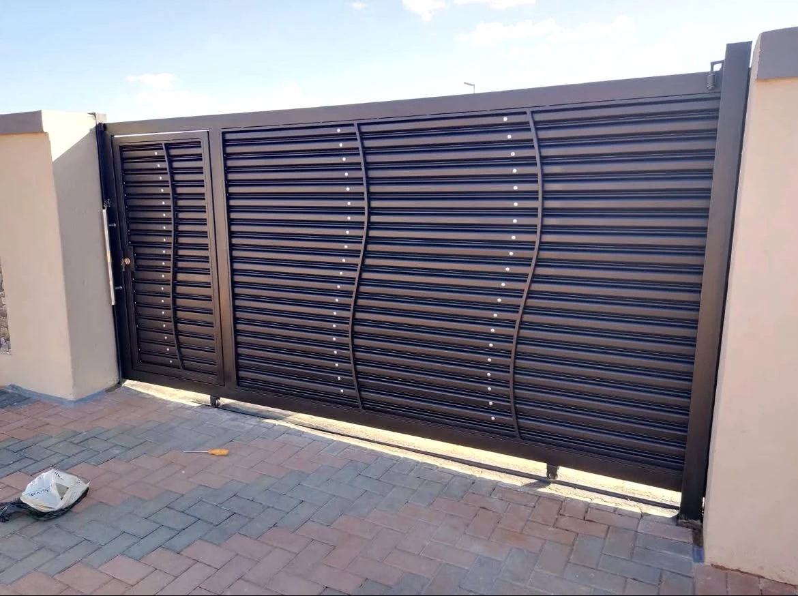
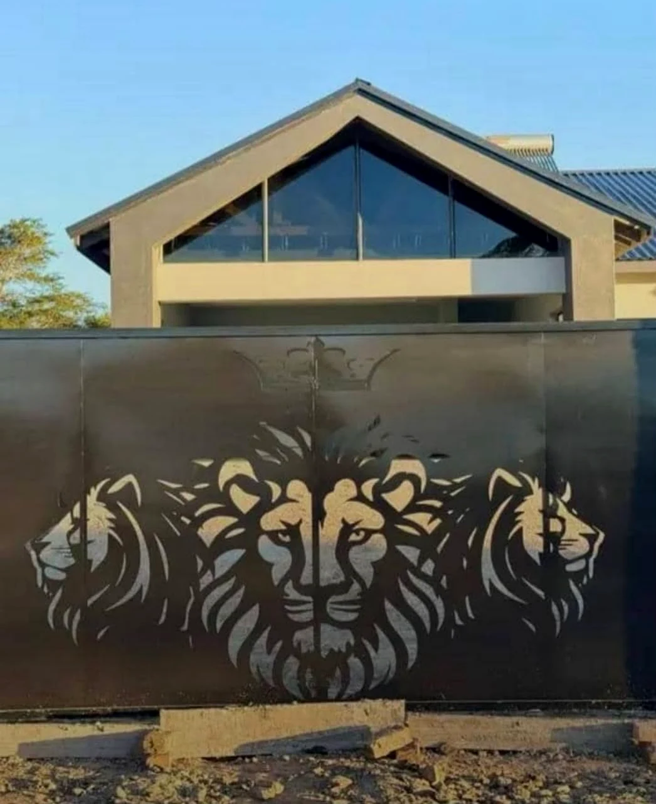
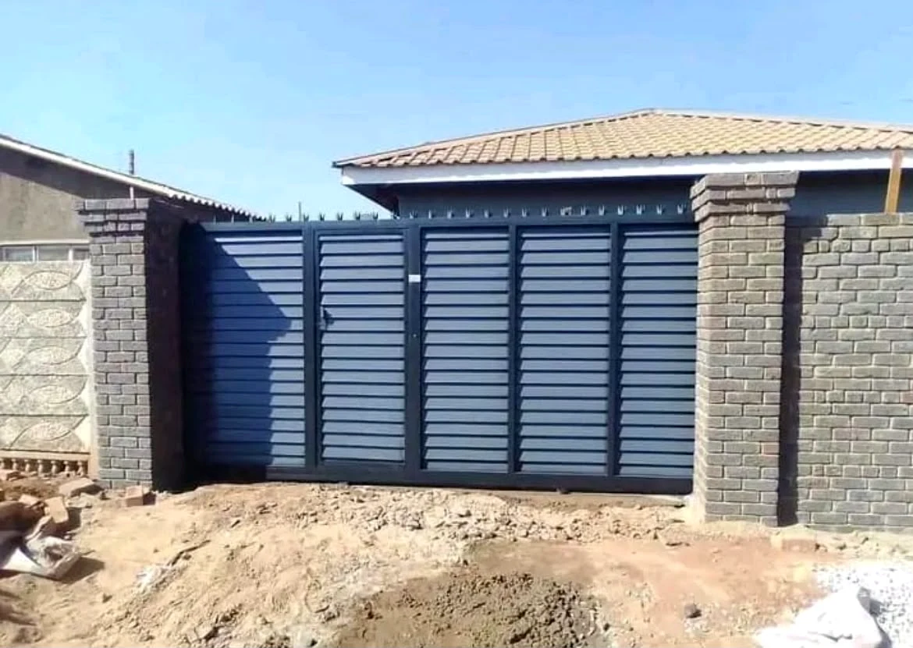

SLIDING GATES
Custom fabricated sliding gates for residential and commercial entrances, combining security, strength and modern design.
Professional steel fabrication, sliding gates, burglar bars and custom security solutions for residential and commercial properties in Harare.
Dimond Engineering and Fabricating specialises in custom steelwork for homes and businesses, with a focus on strong, practical and visually clean security solutions.
From modern sliding gates and pedestrian gates to burglar bars and custom fabrication, each project is produced around the property’s requirements and installed with attention to fit, finish and security.
We combine practical fabrication with modern gate designs to create steelwork that protects the property while complementing its appearance.


From custom gate fabrication to property security steelwork, Dimond delivers practical solutions built around the site and customer’s requirements.
Custom fabricated sliding gates for residential and commercial entrances, combining security, strength and modern design.
Steel pedestrian and entrance gates manufactured to suit the opening and property design.
Strong steel burglar bars and security grilles designed to improve protection for doors and windows.
Custom steel fabrication for gates, security structures and selected metalwork requirements.
Modern slatted, decorative and security-focused gates manufactured around your preferred style.
Professional fitting and installation of fabricated gates, steelwork and security solutions.
Every opening is different. We fabricate around the space, security requirement and visual character of the property.
Clean horizontal steel designs suited to contemporary homes.
Custom gate designs that combine security with visual detail.

Practical steel solutions designed for controlled property access.
Send your gate dimensions, photographs or project requirements.
We assess the opening, gate style and fabrication requirements.
The gate or steelwork is manufactured around the agreed design.
The finished fabrication is fitted and checked on site.
Fabrication designed around the dimensions and requirements of your property.
Practical fabrication focused on security, durability and a clean finish.
From simple contemporary slats to decorative custom work.
Discuss your requirements directly and receive a project-specific quotation.
A complete process from production through to fitting.
Steelwork designed around protection and controlled access.
Custom fabrication allows a gate to become part of the property’s design, combining protection with a distinctive visual finish.
Discuss a custom design ↗Send us your measurements, photographs or project requirements and we’ll discuss the fabrication you need.
Tell us what you need built and Dimond Engineering and Fabricating will help turn the idea into practical steelwork.